Hirokawa
Hirokawa · Fukuoka
Hirokawa
Highlighted on the Fukuoka map.
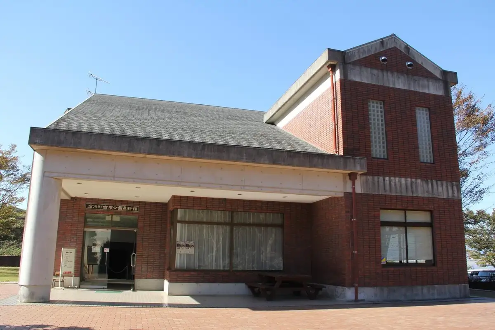
Dining
太昌うどん
Ta Masa Udon
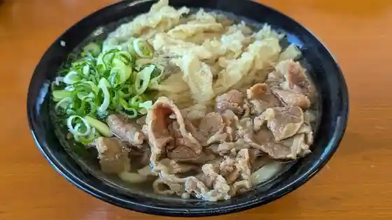
クリームランドカフェ 広川ＳＡ店
Kuriimurandokafe Hirokawa Sa Mise
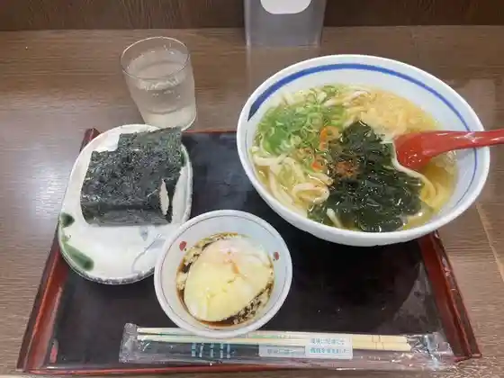
めん処 広川
Men Tokoro Hirokawa
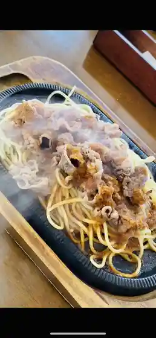
グルメ風月 広川SA店
Gurume Fuugetsu Hirokawa Sa Mise
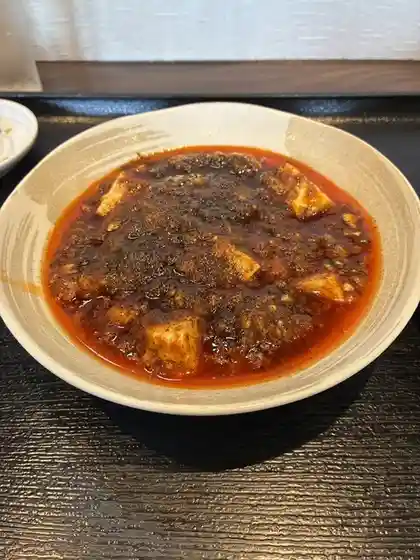
籠
Kago
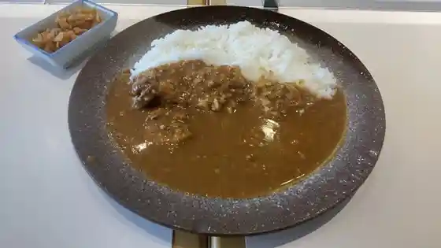
そまりあんカレー
Somarian Karee
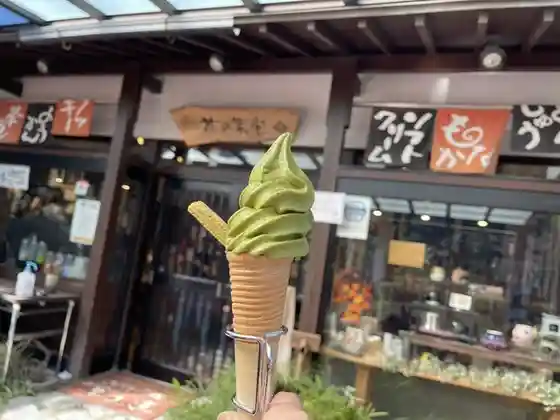
茶の葉堂
Cha No Ha Dou
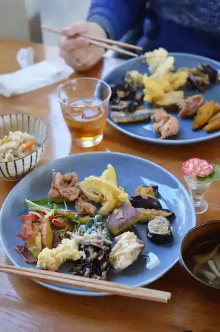
ティア 風と虹の店
Teia Kaze To Niji No Mise
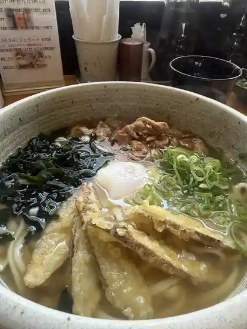
人力 めん太郎
Jinriki Men Tarou
ベティママ 広川ＳＡ店
Beteimama Hirokawa Sa Mise
出島號
Dejima Gou
バンテルン 広川SA店
Banterun Hirokawa Sa Mise
らーめんさかい
Raamensakai
広川サービスエリア上り線スナックコーナー
Hirokawa Saabisueria Nobori Sen Sunakkukoonaa
鶴乃堂八女
Tsuru No Dou Yame
広川サービスエリア 下り線
Hirokawa Saabisueria Kudari Sen
ちゃお
Chao
久留米カントリークラブ レストラン
Kurume Kantoriikurabu Resutoran
昭和食堂館
Shouwa Shokudo Kan
Locavore
Locavore
広川サービスエリア（上り線）レストラン
Hirokawa Saabisueria ( Nobori Sen ) Resutoran
和華
Nodoka
水車そば さかせ
Suisha Soba Sakase
森の中のレストラン 巴里斯
Mori No Nakano Resutoran Pari
和食処 風月
Washoku Tokoro Fuugetsu
ド・ミール鶴 本店
ド・ミール鶴 本店
広川いちご園カフェ
Hirokawa Ichigo Sono Kafe
耳納
Minou
台湾料理 福来たる
Taiwan Ryouri Fukurai Taru
SIDE TRIP CAFE&STORE
SIDE TRIP CAFE&STORE
うどん・そば 八女
うどん・そば 八女
和食乃沙都使
Washoku No Sa Miyako Shi
筑豊ラーメン山小屋 広川店
Chikuhou Raamen Yamagoya Hirokawa Mise
広川サービスエリア 上り
Hirokawa Saabisueria Nobori
一條の森ココチ
Ichijou No Mori Kokochi
甘味のしずく
Amami Noshizuku
sakata cafe
sakata cafe
夢みてなんぼ 八女店
Yume Mitenanbo Yame Mise
彦佐 広川店
Hiko Sa Hirokawa Mise
KIN NO TOSAKA
KIN NO TOSAKA
おおはし鮮魚店
Oohashi Sengyoten
すりみ屋
Surimi Ya
金の鶏冠
Kin No Keikan
野田眞木雄餅店
Noda Maki Osu Mochi Mise
タンドル
Tandoru
炭坊主
Sumi Bouzu
Ann
Ann
スタミナ苑
Sutamina En
らーめんさかい 2号店
Raamensakai 2 Gou Mise
ヒロカワ 里カフェ まち子のおやつ
Hirokawa Sato Kafe Machi Ko Nooyatsu
料亭 扇屋
Ryoutei Ougiya
テイクアウト おふくろ
Teikuauto Ofukuro
やまんた農園 YAMANTO
YAMANTO
ジョイフル 広川店
Joifuru Hirokawa Mise
想夫恋 広川SA店
Soufu Koi Hirokawa Sa Mise
上島珈琲店 広川SA上り店
Kamishima Koohii Mise Hirokawa Sa Nobori Mise
プランツ ファンショップ ナチュラ
Purantsu Fanshoppu Nachura
居酒屋 大泉
Izakaya Ooizumi
しまのはこぱん
Shimanohakopan
めん屋 一重
Men Ya Hitoe
ベジレス
Bejiresu
いちょう庵
Ichou Iori
naturi
naturi
ほっともっと 広川町店
Hottomotto Hirokawachou Mise
御食事処 才
Mike Koto Tokoro Sai
ディライトキッチン 27
Diraitokitchin 27
デイリーヤマザキ 広川当条店
Deiriiyamazaki Hirokawa Toujou Mise
こうちゃん
Kouchan
ガーベラキッチン
Gaaberakitchin
よらんの
Yoranno
桝元
Masu Moto
お菓子工房ソレイユ 直売所
O Kashi Koubou Soreiyu Chokubai Tokoro
I♡KARAAGE
IKARAAGE
想咲ダイニング 憩
Sou Saki Dainingu Kei
まめはや あん楠
Mamehaya An Kusunoki
役場前酒場
Yakuba Mae Sakaba
自家製ハンバーグ屋 安べえ
Jikasei Hanbaagu Ya An Bee
todoke!
todoke
久保田せんべい本舗
Kubota Senbei Honpo
えん屋
En Ya
Kibiru Kitchen
Kibiru Kitchen
焼とり山路
Yaki Tori Yamaji
リセス
Risesu
福岡 ナチュラルスープ
Fukuoka Nachurarusuupu
茶の葉堂
Cha No Ha Dou
宿泊センター川島
Shukuhaku Sentaa Kawashima
居酒屋ひろし
Izakaya Hiroshi
ランチBOX味彩
Ranchi Box Aji Sai
華のれん
Hana Noren
隆勝堂 広川店
Takashi Kachi Dou Hirokawa Mise
お菓子工房 ソレイユ
O Kashi Koubou Soreiyu
六九
Roku Kyuu
寿し廣
Hisashi Shi Kou
地鶏舎
Jidori Sha
カフェ レオン
Kafe Reon
Nanakusa
Nanakusa
Tia Kazeto Niji No Mise
Tia Kazeto Niji No Mise
Vege Res
Vege Res
Sanpuku
Sanpuku
Joyfull Hirokawa
Joyfull Hirokawa
Ogiya
Ogiya
Gourmet Fugetsu Hirokawa SA
Gourmet Fugetsu Hirokawa SA
Waka
Waka
Taisho Udon
Taisho Udon
Paris
Paris
Ramen Umashi
Ramen Umashi
Sumibiyaki Yoshi
Sumibiyaki Yoshi
Maruko Ramen
Maruko Ramen
Torisho Hirokawa
Torisho Hirokawa
Korean Restaurant Sejon
Korean Restaurant Sejon
This Chan
This Chan
Recess
Recess
Hakata Marubi
Hakata Marubi
Stamina En
Stamina En
Hotomeki Restaurant
Hotomeki Restaurant
Sumibiyaki Itoyo
Sumibiyaki Itoyo
Yakitori Ichi
Yakitori Ichi
Lunch Box Ajisai
Lunch Box Ajisai
Yamako
Yamako
Masugen
Masugen
Sakai Shokudo
Sakai Shokudo
Hashi Asobi Nakashima
Hashi Asobi Nakashima
Yakitori Tokuchan
Yakitori Tokuchan
Sushiko
Sushiko
Inaritako
Inaritako
Yakitori Kibarashi
Yakitori Kibarashi
Hikoza Hirokawa
Hikoza Hirokawa
Yakitori Torihiro
Yakitori Torihiro
Izakaya Enya
Izakaya Enya
Nagomi
Nagomi
Karaoke Bun Chan
Karaoke Bun Chan
Seshu
Seshu
Patisserie Cafe Pousser Hirokawa
Patisserie Cafe Pousser Hirokawa
Plants Fan Shop Natura
Plants Fan Shop Natura
Karaoke Dance Kitchen Bar Wing
Karaoke Dance Kitchen Bar Wing
Izakaya Yakitori Kion
Izakaya Yakitori Kion
Sampuk
Sampuk
Tupelo
Tupelo
Shiki
Shiki
Sights
Tawara no Icho
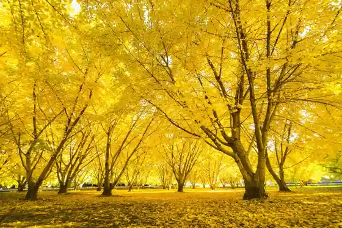
Aizen Kasuri Workshop Yama Village Takeshi
Moriyama Kasuri Workshop
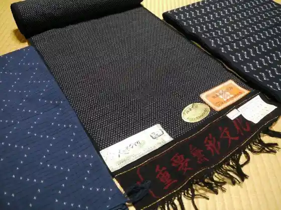
Gyaku Se Gotton Kan
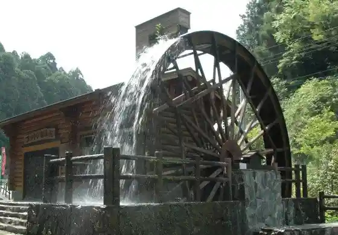
Hirokawa Sangyo Tenji Hall
Hirokawa Burial Mound Koen Museum (Kofun Pia Hirokawa)
Kasuri Village Yugengaisha Sakata Orimono
Kubota Sembei Honpo
Hirokawa Dam Hirokawa Dam Park
no Village Orimono Yugengaisha
Hirokawa Ichigo Sono
Kasuri Workshop (Ai no Shi) Fuku Orimono
Yuchan Farm
Noda Maki Osu Mochi Mise
Yama Village Kasuri Workshop
Marugame Kasuri Orimono Kojo
Gyaku Seya Yakushido
Yame Cha Sanchi Tonya Shigematsu Tsuruju Sono
Kawase Yaki Kamiyama Kama
Koka Tani Burial Mound
Hirokawa Ai Sai Market
Yamai
Sho Shii O no Ten Made Todoku Dandambatake